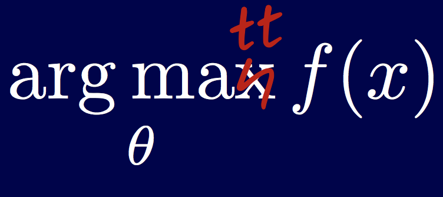

Data Science & Consulting
I'm passionate about bridging the gap between theoretical statistics and real-world insights.
- Right now, I pursue this interest as a principal data scientist with consultancy focused on data-driven products for organizations ranging from Fortune 500s to small start-ups. Learn more here.
- I also channel this passion into some volunteer work with Statistics Without Borders, an organization that utilizes a worldwide network of statisticians and data volunteers to provide free consulting services to non-profits and non-governmental organizations.